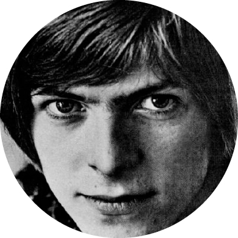

Davy Jones

In 1962, Bowie formed his first band at the age of 15, named the Konrads. Playing guitar-based rock and roll at local youth gatherings and weddings, the Konrads had a varying line-up of between four and eight members, Underwood among them. When Bowie left the technical school the following year, he informed his parents of his intention to become a pop star. His mother arranged his employment as an electrician's mate. Frustrated by his bandmates' limited aspirations, Bowie left the Konrads and joined another band, the King Bees. He wrote to the newly successful washing-machine entrepreneur John Bloom inviting him to "do for us what Brian Epstein has done for the Beatles—and make another million." Bloom did not respond to the offer, but his referral to Dick James's partner Leslie Conn led to Bowie's first personal management contract.
Conn quickly began to promote Bowie. The singer's debut single, "Liza Jane", credited to Davie Jones with the King Bees, was not commercially successful. Dissatisfied with the King Bees and their repertoire of Howlin' Wolf and Willie Dixon covers, Bowie quit the band less than a month later to join the Manish Boys, another blues outfit, who incorporated folk and soul—"I used to dream of being their Mick Jagger", Bowie was to recall. Their cover of Bobby Bland's "I Pity the Fool" was no more successful than "Liza Jane", and Bowie soon moved on again to join the Lower Third, a blues trio strongly influenced by The Who. "You've Got a Habit of Leaving" fared no better, signalling the end of Conn's contract. Declaring that he would exit the pop music world "to study mime at Sadler's Wells", Bowie nevertheless remained with the Lower Third. His new manager, Ralph Horton, later instrumental in his transition to solo artist, soon witnessed Bowie's move to yet another group, the Buzz, yielding the singer's fifth unsuccessful single release, "Do Anything You Say". While with the Buzz, Bowie also joined the Riot Squad; their recordings, which included one of Bowie's original songs and material by The Velvet Underground, went unreleased. Kenneth Pitt, introduced by Horton, took over as Bowie's manager.
Dissatisfied with his stage name as Davy (and Davie) Jones, which in the mid-1960s invited confusion with Davy Jones of The Monkees, Bowie renamed himself after the 19th-century American pioneer James Bowie and the knife he had popularised. His April 1967 solo single, "The Laughing Gnome", using speeded-up thus high-pitched vocals, failed to chart. Released six weeks later, his album debut, David Bowie, an amalgam of pop, psychedelia, and music hall, met the same fate. It was his last release for two years.